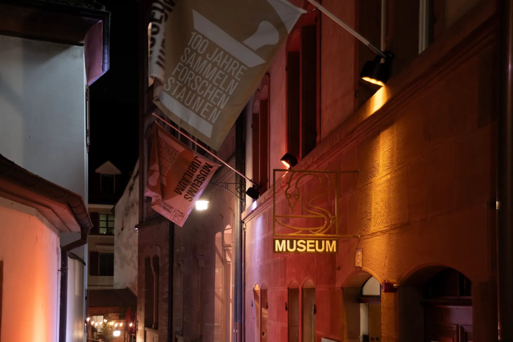
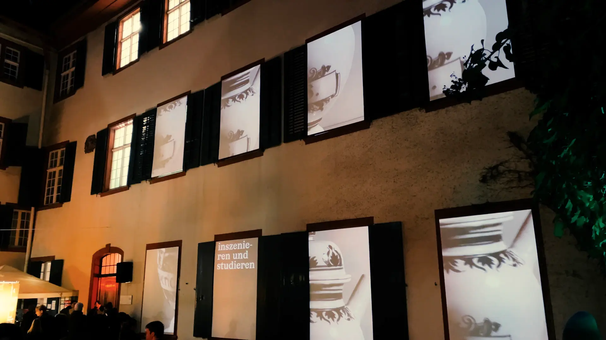
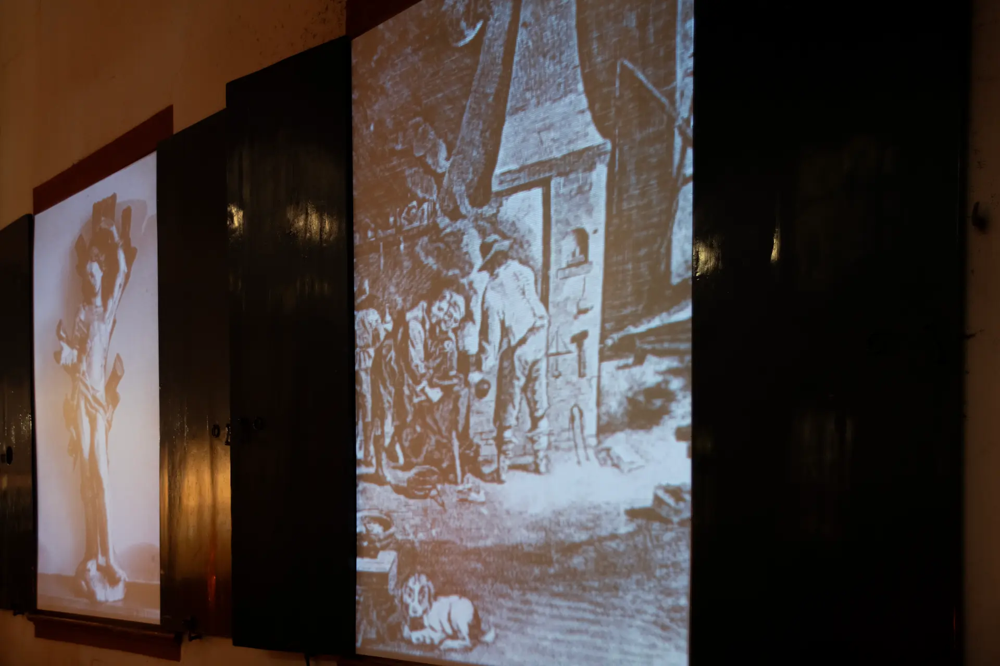
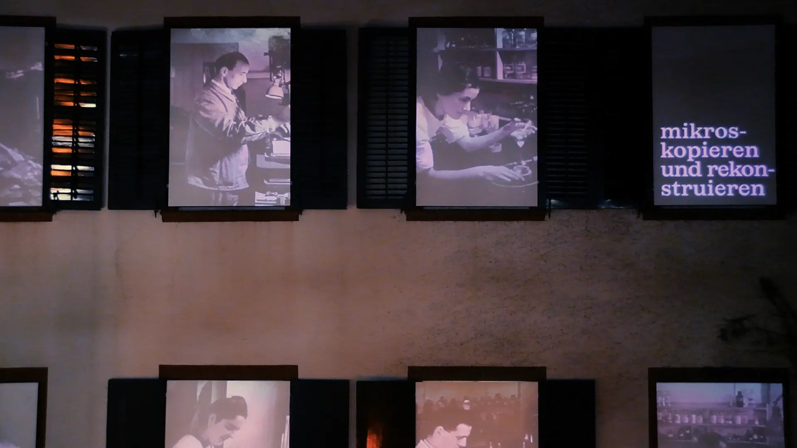

To celebrate the centenary of the “ Pharmaziemuseum der Universität Basel ”, visitors at the “ Museumsnacht Basel 2026 ” experienced an immersive journey through the museum’s image archive, featuring photographs from the 1920s and 1930s.
The image archive was projected across eight windows in the museum’s inner courtyard, serving as a literal and figurative window into the institution’s rich history.



The combination of projection and sound transformed the courtyard into an immersive environment, allowing visitors to preceive the museum’s activities through a dreamlike lens.
